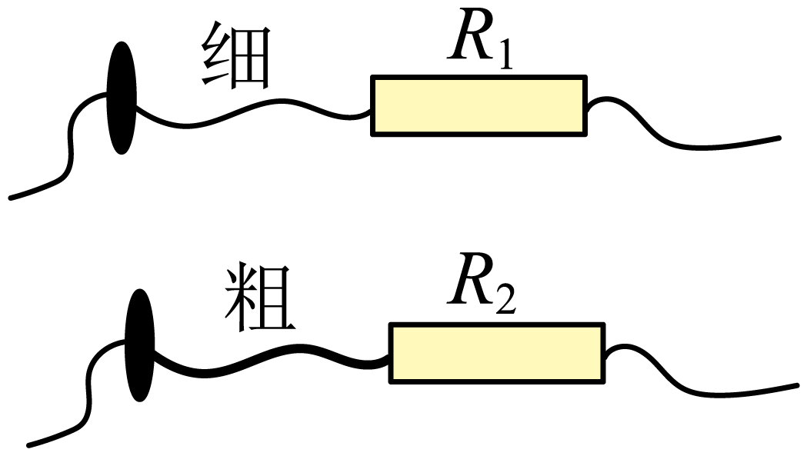
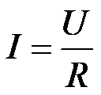
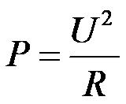

2023年北京中考物理 第11题 解析
11. 如图是两个定值电阻R1、R2的内部结构图，R1、R2所用电阻丝（涂有绝缘漆）粗细均匀、材料相同，分别缠绕在相同的圆柱形绝缘棒上，圈数分别为43圈和33圈，R1的电阻丝比R2的电阻丝细。将R1、R2并联在电路中工作一段时间，下列说法正确的是（ ）

A. 通过R1的电流等于通过R2的电流
B. R1两端的电压大于R2两端的电压
C. R1的电功率大于R2的电功率
D. R1消耗的电能小于R2消耗的电能
【答案】D
【解析】
【详解】由题意可知，两电阻丝的材料相同，电阻丝R1比R2长且细，则R1>R2；
AB．因R1与R2并联，电阻两端的电压相等，由

可知，电阻大的通过的电流小，所以通过R1的电流小于通过R2的电流，故AB错误；C．由

可知，R1电功率小于R2的电功率，故C错误；
D．R1电功率小于R2的电功率，根据W=Pt可知，相同时间内R1消耗的电能小于R2消耗的电能，故D正确。
故选D。